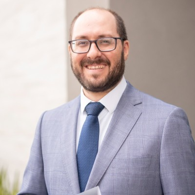

Condução pessoal, sênior,
em Direito da Saúde.
A advocacia que entregamos é exercida com presença pessoal. Cada caso é conduzido pelo sócio fundador, com o apoio de uma equipe especializada de consultores e parceiros.
Condução pessoal, atuação concentrada.
Ricardo Pacheco Mesquita de Freitas conduz pessoalmente cada caso. Conforme as particularidades da demanda, o escritório conta com uma equipe especializada de consultores e parceiros, selecionados com critério para reunir as competências necessárias a cada trabalho.

Ricardo Pacheco
Mesquita de Freitas
Advogado há mais de uma década, com experiência em contencioso cível e atuação concentrada, há mais de cinco anos, em Direito Médico e da Saúde. Representa beneficiários em conflitos com operadoras de planos de saúde e atua na proteção jurídica de médicos, dentistas, clínicas e hospitais.
Sua prática combina análise de contratos, documentação clínica e prova técnica com condução pessoal de medidas administrativas e judiciais. Em Brasília e no Distrito Federal, atende casos de negativa de cobertura, responsabilidade civil médica e processos perante Conselhos de Classe.
Possui produção doutrinária em periódicos jurídicos especializados — incluindo a Revista Consultor Jurídico (ConJur) e a Revista do Ministério Público do Estado de Goiás —, e atua como professor de Direito.
A escolha pela equipe enxuta.
Operamos em estrutura deliberadamente pequena. A escolha não é circunstancial — é estratégica. Equipes grandes diluem responsabilidade, criam rotinas que despersonalizam o atendimento e transferem o cliente entre advogados ao longo do processo.
Aqui, o sócio fundador conduz pessoalmente cada caso. Quando a complexidade exige, conta com uma equipe especializada de consultores e parceiros, composta de acordo com as necessidades do trabalho e sempre selecionada pelo escritório com critério.
Esse modelo nos permite aceitar um número limitado de mandatos por ano, com a profundidade que cada um exige. É uma escolha que privilegia a qualidade sobre o volume — porque o cliente que nos contrata merece a atenção real, não fragmentada.
Falar diretamente com o sócio.
Recebemos novos clientes mediante diálogo prévio. Não há intermediários nem triagem por equipes administrativas — a primeira conversa é com quem efetivamente conduzirá o caso.
Agendar uma conversa →